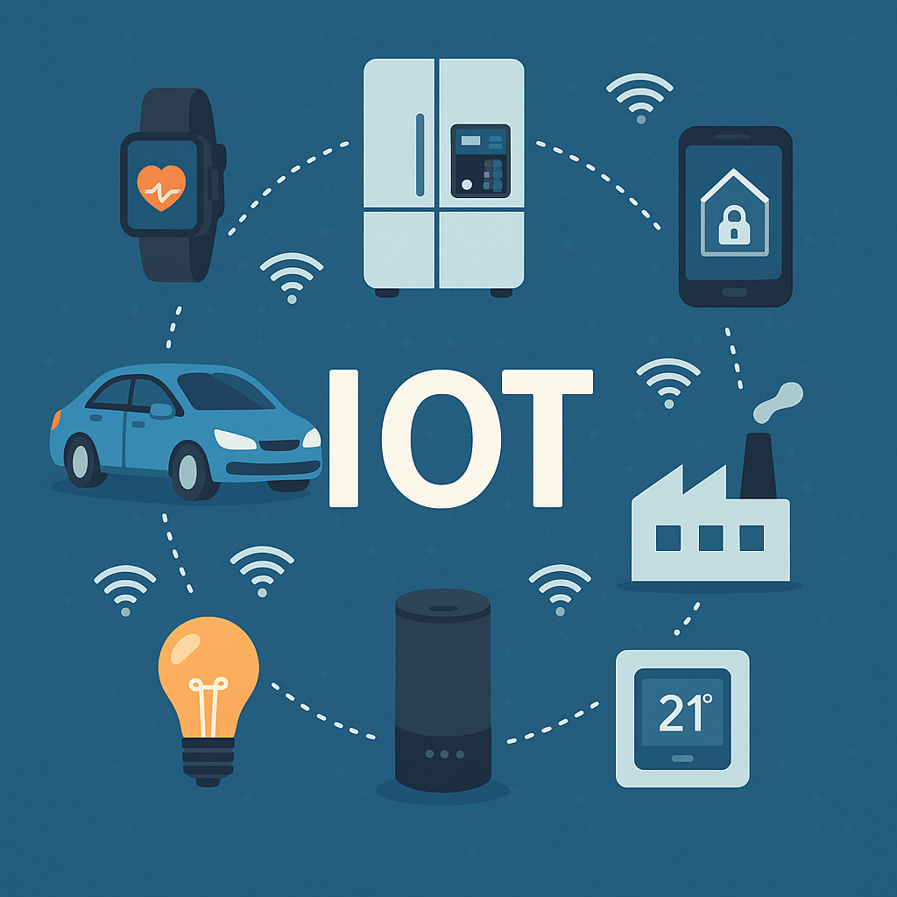

Internet das Coisas(IoT):A revolução da Conectividade
A Internet das Coisas, ou IoT (Internet of Things), é um conceito que se refere à ligação de dispositivos
físicos à internet, permitindo-lhes recolher, enviar e receber dados. Esta tecnologia está a transformar a forma
como vivemos, trabalhamos e interagimos com o mundo à nossa volta. Na prática, a IoT permite que objectos
do dia-a-dia — como frigoríficos, relógios, carros, sistemas de iluminação, máquinas industriais e até roupas
— se tornem "inteligentes", comunicando entre si e com o utilizador, sem necessidade de intervenção
humana constante. Um exemplo simples é um sistema de rega que se activa automaticamente com base na
previsão meteorológica ou na humidade do solo.
